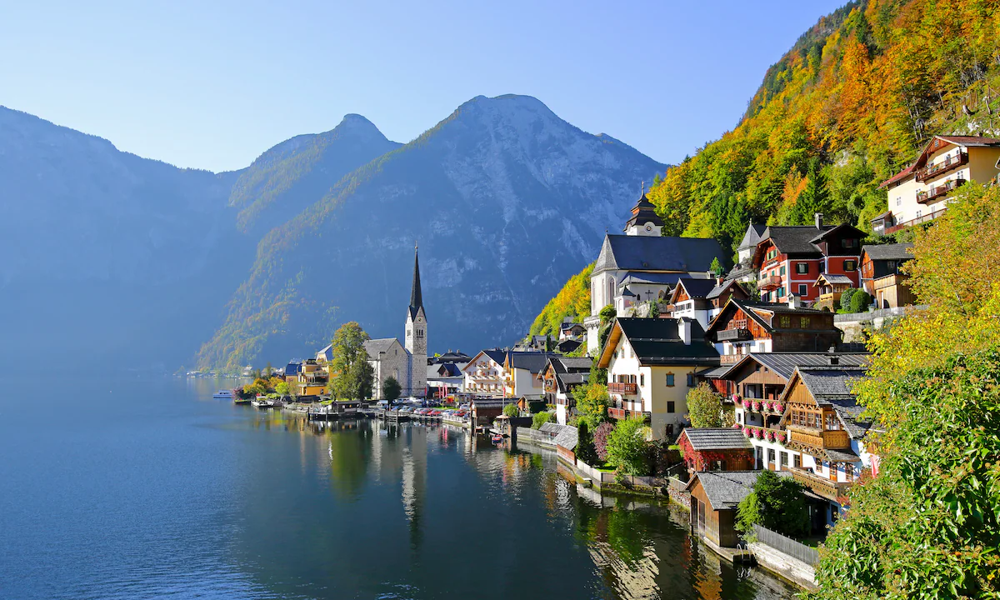

ЗИМСКА ПОНУДА

ЗИМСКА СКИЈАЧКА ПОНУДА
Тирол, Австрија
01.02 - 07.02
Доживејте незаборавна зимска авантура во срцето на австриските Алпи. Уживајте во снежните планини, прекрасните скијачки патеки и вистинската зимска атмосфера. Совршена понуда за сите љубители на скијањето, сноубордот и планинските авантури.
ЗИМСКА АВАНТУРА
Една од најубавите планински области во Австрија, позната по прекрасните снежни пејзажи, традиционалните тиролски села и величествените планински врвови. Во зимскиот период областа нуди идеална атмосфера за одмор, прошетки и уживање во чистата планинска природа.
Импресивна планинска област со високи снежни врвови и модерни скијачки центри. Туристите ќе имаат можност за скијање и сноуборд на уредени патеки, како и за уживање во прекрасните зимски пејзажи и планинската атмосфера.
Живописно тиролско место со традиционални дрвени куќи, снежни улици и автентична австриска атмосфера. Прошетката низ селото нуди можност за фотографирање, уживање во локалната гастрономија и запознавање со традиционалниот начин на живот во планинските предели.
Главниот град на Тирол, опкружен со величествените Алпи и познат по својата историска архитектура и планинска атмосфера. Во центарот се издвојува познатиот Златен покрив, а со возењето со жичара се овозможува прекрасен панорамски поглед кон Инсбрук и околните снежни планини.
Состанок со групата на аеродром во Скопје, 2 часа пред летот. Следува директен лет до Виена па диретен лет до Тирол и пристигнување на аеродромот. По завршувањето на аеродромските процедури следува организиран трансфер до хотелот. По сместувањето и краткиот одмор следува прва прошетка низ околината. Туристите ќе имаат можност да се запознаат со традиционалната тиролска архитектура, снежните пејзажи и зимската атмосфера. Во вечерните часови е предвидено слободно време за вечера и уживање во планинската атмосфера. Ноќевање во хотел.
Појадок во хотелот и организирано заминување кон Инсбрук. Следува прошетка низ историскиот центар на градот, со разгледување на Златниот покрив и главните градски улици. Предвидено е слободно време за кафе, ручек и индивидуално разгледување. Во продолжение следува организирано заминување кон планинскиот дел и можност за возење со жичара, согласно временските услови и оперативноста. Од планинските височини се овозможува прекрасен поглед кон Инсбрук и околните снежни Алпи. Враќање во хотелот во попладневните или вечерните часови. Ноќевање во хотел.
Појадок во хотелот и организирано заминување кон избраниот скијачки центар. Денот е предвиден за зимски активности според интересот на туристите. Можност за скијање и сноуборд на уредени патеки, како и изнајмување опрема и користење услуги на скијачкиот центар. За туристите кои не скијаат е предвидено слободно време за зимска прошетка, фотографирање и уживање во планинската природа. Предвидено е време за ручек во планински објект. Во попладневните часови следува враќање во хотелот и слободно време за одмор. Вечерта е слободна за вечера. Ноќевање во хотел.
Појадок во хотелот и организирано заминување кон традиционално тиролско планинско место. Следува прошетка низ селото, разгледување на традиционалните куќи и уживање во снежната природа и мирната зимска атмосфера. Предвидено е слободно време за кафе, локална храна и фотографирање. Во зависност од снежните услови и понудата на локацијата, туристите ќе имаат можност за санкање или кратка зимска прошетка. Попладнето следува враќање во хотелот и слободно време за одмор. Вечерта е слободна за индивидуални активности. Ноќевање во хотел.
Појадок и организирано заминување кон планинската област. Следува возење со жичара до повисоките планински предели, согласно временските услови и работата на жичарите. Предвидено е време за уживање во панорамските погледи кон снежните Алпи, фотографирање и кратка зимска прошетка на безбедните и достапни делови. Потоа следува слободно време за ручек во планинска средина. Попладнето е предвидено за враќање и одмор во хотелот. Вечерта е слободна за вечера и уживање во зимската атмосфера. Ноќевање во хотел.
Појадок во хотелот и слободно утро за одмор и индивидуални активности. Туристите можат да изберат помеѓу дополнително скијање, сноуборд, санкање или зимска прошетка, во зависност од условите и достапните активности во избраниот планински центар. За туристите кои не се заинтересирани за зимски спортови, предвидено е слободно време за посета на блиското градче, кафе, локална гастрономија и шопинг. Попладнето следува заедничка прошетка и фотографирање во зимскиот пејзаж пред враќањето во хотелот. Вечерта е слободна за вечера и последно уживање во тиролската атмосфера. Ноќевање во хотел.
Појадок во хотелот и одјавување согласно предвиденото време. Следува кратка утринска прошетка низ околината, со можност за последни фотографии и кафе. Пред поаѓањето е предвидено слободно време за последен шопинг и уживање во зимската атмосфера. Потоа следува организиран трансфер до аеродромот. По завршување на аеродромските процедури следи директен лет кон Виена па диретен лет до Скопје. По пристигнувањето и преземањето на багажот завршува организираното патување.